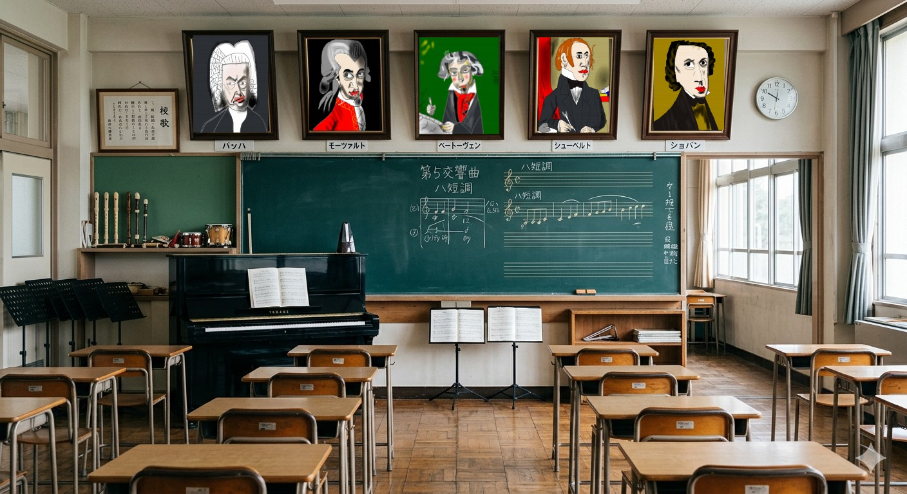

クラシックを聞きながら、音楽センスが0の人が演奏した曲を聞くことができるページ
肖像画は、絵が世界一下手な自分が模写したもの(各40~60分)
背景はGeminiが生成
演奏する際に使用したページ：https://mike3.net/piano/index-pre.html
音痴だし、どの音、音階がなっているのかよく分からないので1/12~1/7の運で鍵盤を押してる
音楽、美術以外にも、体育、技術家庭、書道 などで同様のセンス0シリーズを作りたい
※(書かなくても分かると思うけど)インターネット上屈指のクソページ 耳を壊したい人向け

知っている曲を基本的に1発勝負で演奏
なんとなく数値(-6～+6)を知っている曲もある (←この表現じゃ音楽家に伝わらないけど書きやすいのでこのままで)
チャールダーシュ モンティ
花 滝廉太郎
ラ・カンパネラ リスト
クープランの墓 プレリュード ラヴェル
熊蜂の飛行 コルサコフ
クシコスポスト ネッケ
「四季」より「春」 ヴィヴァルディ
展覧会の絵 第1プロムナード ムソルグスキー
トルコ行進曲 モーツァルト
交響曲第5番 ハ短調 作品67 (運命) ベートーヴェン
ウィリアム・テル序曲 ロッシーニ